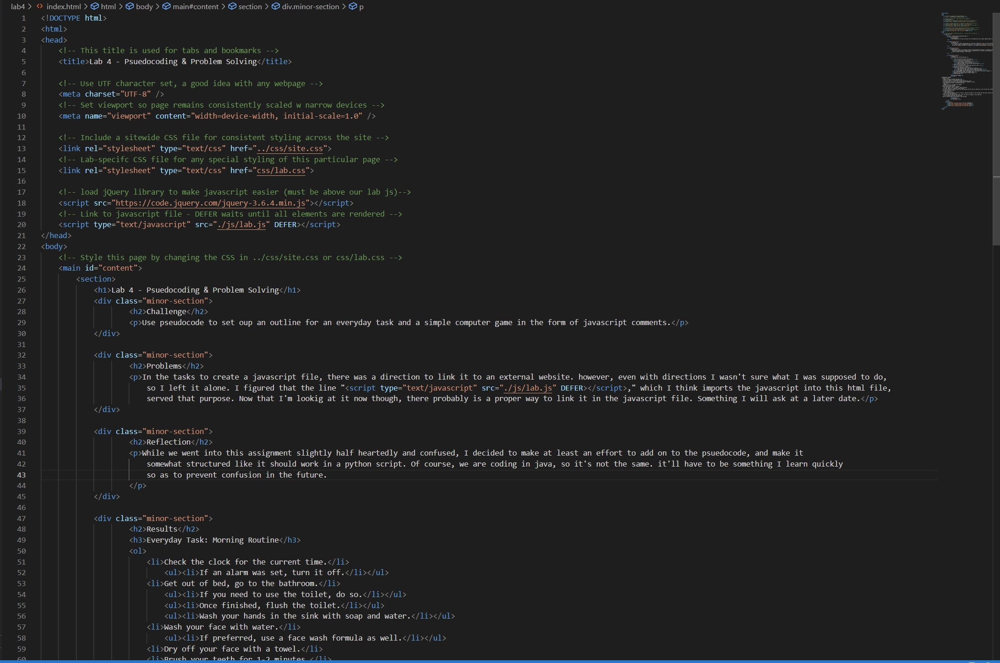
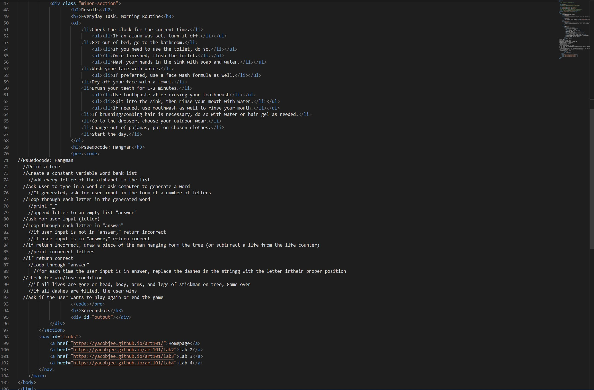

Lab 4 - Psuedocoding & Problem Solving
Challenge
Use pseudocode to set oup an outline for an everyday task and a simple computer game in the form of javascript comments.
Problems
In the tasks to create a javascript file, there was a direction to link it to an external website. however, even with directions I wasn't sure what I was supposed to do, so I left it alone. I figured that the line "," which I think imports the javascript into this html file, served that purpose. Now that I'm lookig at it now though, there probably is a proper way to link it in the javascript file. Something I will ask at a later date.
Reflection
While we went into this assignment slightly half heartedly and confused, I decided to make at least an effort to add on to the psuedocode, and make it somewhat structured like it should work in a python script. Of course, we are coding in java, so it's not the same. it'll have to be something I learn quickly so as to prevent confusion in the future.
Results
Everyday Task: Morning Routine
- Check the clock for the current time.
- If an alarm was set, turn it off.
- Get out of bed, go to the bathroom.
- If you need to use the toilet, do so.
- Once finished, flush the toilet.
- Wash your hands in the sink with soap and water.
- Wash your face with water.
- If preferred, use a face wash formula as well.
- Dry off your face with a towel.
- Brush your teeth for 1-2 minutes.
- Use toothpaste after rinsing your toothbrush
- Spit into the sink, then rinse your mouth with water.
- If needed, use mouthwash as well to rinse your mouth.
- If brushing/combing hair is necessary, do so with water or hair gel as needed.
- Go to the dresser, choose your outdoor wear.
- Change out of pajamas, put on chosen clothes.
- Start the day.
Psuedocode: Hangman
//Psuedocode: Hangman
//Print a tree
//Create a constant variable word bank list
//add every letter of the alphabet to the list
//Ask user to type in a word or ask computer to generate a word
//If generated, ask for user input in the form of a number of letters
//Loop through each letter in the generated word
//print "_"
//append letter to an empty list "answer"
//ask for user input (letter)
//Loop through each letter in "answer"
//if user input is not in "answer," return incorrect
//if user input is in "answer," return correct
//if return incorrect, draw a piece of the man hanging form the tree (or subtrract a life from the life counter)
//print incorrect letters
//if return correct
//loop through "answer"
//for each time the user input is in answer, replace the dashes in the stringg with the letter intheir proper position
//check for win/lose condition
//if all lives are gone or head, body, arms, and legs of stickman on tree, Game over
//if all dashes are filled, the user wins
//ask if the user wants to play again or end the game
Screenshots
Java file, including the psuedocode and a partial heading structure
HTML of this page (part 1)
HTML of this page (part 2)